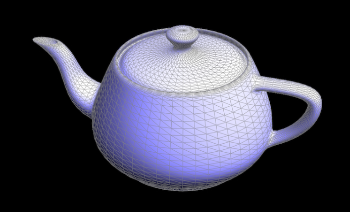
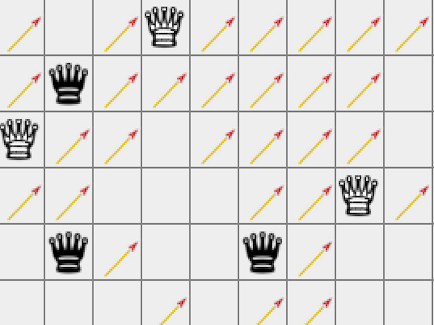

Randy Fan
Developer
Researcher
About
Hi, I recently graduated from Berkeley with a degree in Computer Science and will be pursuing a MS in EECS at Berkeley, advised by Professor Carlo Séquin. I am currently a Gaming PM intern at Microsoft, and previously interned in the FRP program for the past 2 summers. I leverage my interdiscplinary background to offer unique and effective solutions to technical problems. If you would like to chat about opportunities, please contact me at randyfan@berkeley.edu.
Education
UC Berkeley
Class of 2021
Master's in EECS with research focus in computational geometry and 3D modeling; advised by Professor Carlo Séquin
UC Berkeley
Class of 2020
Bachelor's in CS; GPA: 3.84; Magna Cum Laude; Dean's List; Upsilon Pi Epsilon (CS Honors Society for top Berkeley CS students)
Plano West Senior HS
Class of 2016
Class Rank: 3 out of 1400; 21 AP courses; SAT: 2320 (800 Math, 790 Reading); ACT: 36; SAT Math II: 800; National AP Scholar
Projects
Some applications I've created while at school or in my free time. A few dozen not listed.
Pathtracer
A physically-based renderer using a pathtracing algorithm. Incorporates ray-scene intersection, acceleration structures, physically based lighting, complex materials, environment lighting, and depth of field effects.
Color in Nature Inspired Design
Combining smart color schemes with cellular automaton and reaction-diffusion system.
MeshEdit
A mesh editor that allows you to load and edit basic COLLADA mesh files. Uses de Casteljau's algorithm to build Bezier curves/surfaces and half-edge data structure to manipulate meshes. Also includes an implementation of loop subdivision.
Real-time Cloth Simulator

A real-time cloth simulator using a mass and spring based system. Simulates cloth movement and calculates forces using numerical integration. Handles collisions with other objects (e.g. sphere) and self-collisions to prevent cloth clipping.
Filter and Frequencies

Implemented various derivative filters to perform useful tasks such as image straightening. Applied filters to help sharpen images, create hybrid images, and implemented image blending operations using Gaussian and Laplacian stacks.
Seam Carving + Gradient Fusion

Implemented verticla and horizontal seam carving as well as gradient domain fusion, performing poisson blending.
Enigma Machine
A simulator for a generalized version of the Enigma Machine. The Enigma was used by Germany in World War II to encrypt millitary communications.
Amazons
A simulated Argentinian strategy game, including minimax AI bots that can force wins within a dozen moves.
Get in touch!
Click the button below to send me an email & I'll get back to you.
Feel free to download my resume as well!